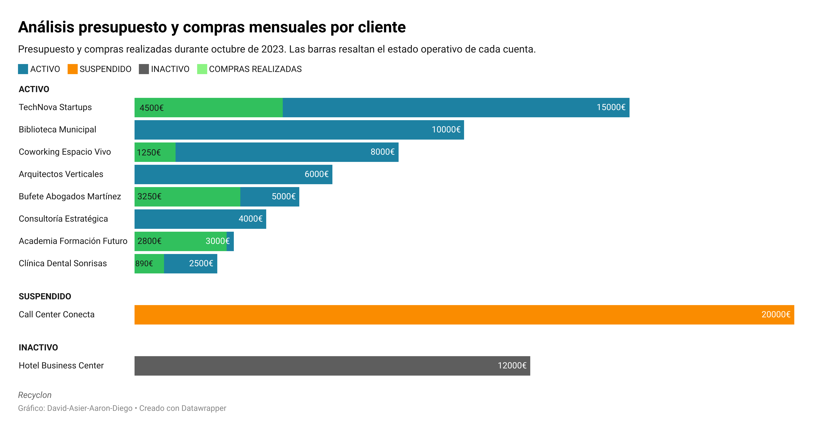

RECYCLON S.L.S.
Manual de Prevención de Riesgos Laborales
RECYCLON S.L.S.Manual de Prevención de Riesgos Laborales |

Inicio |

Oficina |

Almacen |

Emergencia |

Gráficos |
|
Introducción |
Sobre Nuestros Protocolos de Seguridad Online |
||
| A continuación, presentamos un desglose analítico detallado mediante una serie de visualizaciones gráficas clave. Estas herramientas ilustran con precisión el flujo comercial de la empresa de logística Recyclon S.L.S. , centrándose específicamente en las estadísticas de compraventa. Todos los datos expuestos han sido extraídos en tiempo real, garantizando una visión estrictamente reciente y actualizada. |

|

|
Implementamos una infraestructura de gestión de datos de vanguardia que somete toda la información, tanto corporativa como personal sensible, a un proceso sistemático de clasificación, encriptación y almacenamiento seguro. Mediante la aplicación de capas de seguridad reforzadas, eliminamos cualquier vector de vulnerabilidad en el tratamiento de los datos. |
|
Estadísticas Generales de Recylon S.L.S. |
|
Estadísticas recientes de compra-venta activa/inactiva de la empresa Recyclon S.L.S. . |
|  | En este gráfico podemos observar el análisis realizado a las compras realizadas con el presupuesto que disponiamos en el mes de octubre de 2023, también se puede apreciar 2 operaciones direfentes a las demás. Estas son suspendido e inactivo. |

|
En este gráfico se puede apreciar el balance diario de ingresos y gastos del mes de octubre de 2023. Las columnas mas difuminadas son las operaciones que están pendientes de pago/cobro. |

|